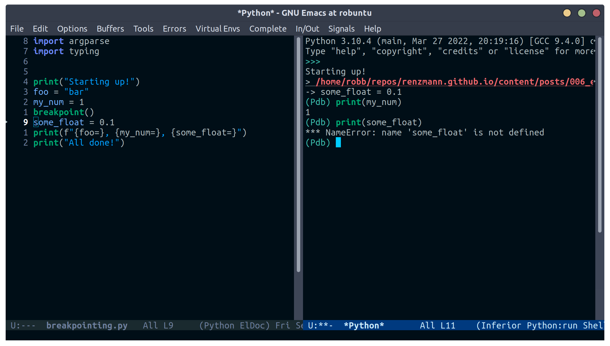
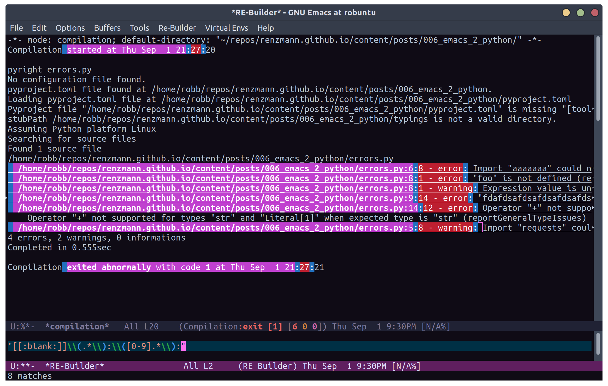
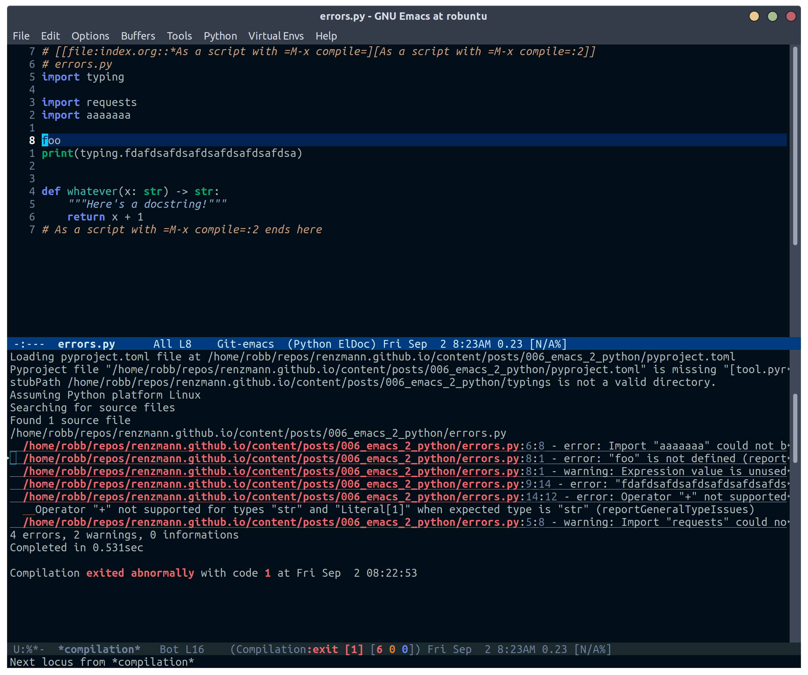

There are a lot of great guides on getting set up with Python in
Emacs. Many of them have titles like "Emacs as a Python IDE" and
start off by installing pyvenv for virtual environment management,
eglot or lsp-mode for autocomplete/error checking, and maybe a
host of other non-python things, like the helm or projectile
packages.
This is not that guide.
This guide is for picky @#$%!s like me who want to exhaust every
builtin capability before reaching out to external dependencies.
Dependencies that, in turn, I will also have to learn and manage.
Once I really understand what pyvenv is solving, then, and only
then, will I add it to my package-selected-packages.
Despite the excellent swath of materials both new and old on how to
get IDE-like performance for Python out of Emacs, the collected
materials on just running "vanilla extract" are fairly scant. The
builtin python.el documentation is thorough and the keybindings
easily discoverable, but not all documentation is collated into a
single place. This guide started out as just my working notes as I
began primarily working in emacs for my Python projects, and has grown
into a workflow guide using nothing but the builtin capabilities
of Emacs 28.1+. With that in mind, the examples and walkthroughs
presented here are designed for emacs -q - i.e. starting emacs
without any user configuration or your distribution's default.el.
Let's get our feet wet by bopping around some Python buffers first.
I'm going to start up a new python file with C-x C-f and naming my
file editing.py. I'm going to start by just adding a couple
functions and a print statement, obfuscating the typical "Hello,
world!" example a bit by introducing some functions and a "main"
section right away.
# These funtions are a little basic and silly right now, but we'll use
# them to showcase some Emacs features later on.
def hello_text():
"""Just gives back 'Hello'"""
return "Hello"
def world_text():
"""Just gives back 'world!'"""
return "world!"
if __name__ == "__main__":
# Emacs 28.1+ has f-string syntax highlighting built in
print(f"{hello_text()}, {world_text()}!")
By visiting this file, Emacs automatically goes into python-mode,
which turns on a lot of Python-specific functionality. If you're
impatient like me and want to see everything that's available right
away, I'd start with C-c C-h from the editing.py buffer to see key
commands specific to python-mode, and also use C-h a python to
see every command involving the word "python" in some way. Out of
the box we also get syntax highlighting, including within f-strings.
C-c commandsEmacs typically has commands that are specific to the active major
mode bound to C-c C-<letter>. What each <letter> does will depend
on the buffer you're currently in and what major mode is active. In
our case, that's python-mode, which has a lot of handy shortcuts
already mapped out. For any of the keyboard shortcuts you can always
use C-h k, or C-h f for the function names (prefixed by M-x
below) to get the official documentation.
C-c C-p or M-x run-python to start a python REPLThis boots up what Emacs calls an "inferior Python shell".
"Inferior" here just means that Python is running as a subprocess of
Emacs; not that there's some other, "superior" method of running a
Python process. If you need to control the exact command Emacs runs
to start the shell, you can use the universal C-u prefix before
either C-c C-p or M-x run-python to edit the command Emacs runs.
Based on the previous article, what I'm frequently doing is holding
down the Ctrl key with my left little finger, then rapidly typing u,
c, and p to get C-u C-c C-p, bringing up a minibuffer prompt
like this:
Run Python: python3 -i█
Where █ is point (my cursor). I then use C-a to move point back
to the start and add a poetry run:
Run Python: poetry run█python3 -i
Emacs is typically smart enough to figure out what to do even if we
leave off the -i, but generally it's good to leave it in there.
C-c C-z jumps to python REPL if already runningOnce the REPL is running, this is a very handy one for swapping back and forth between a file I'm actively editing and a running Python process
C-c C-{c,e,r} for sending chunks to the REPLA handy complement to C-c C-z, these commands are for taking pieces
of Python that I'm actively editing and sending them to the Python
buffer all at once.
C-c C-v or M-x python-checkC-c C-t ... or python-skeleton-...Using C-c C-t d and C-c C-t c it's easy to insert new def and
class statements (think t for "template", d for "def", and c
for "class"). Ater invoking one of these, Emacs will guide us through
the process of filling out each part needed to define a new function
or class via the minibuffer. Using C-g at any point while editing
the template wil revert the buffer back to its original state, as if
you never started filling out the skeleton.
# editing.py
# --snip--
# Here we use `C-c C-t d` and follow the prompts to design a new
# function signature.
def whatever(my_string: str = hello_text, my_integer: int = 0):
"""Whatever, man"""
return f"{hello_text}, {my_integer}"
# Next, `C-c C-t c` to make a new class
class MyGuy:
"""My guy is ALWAYS there for me"""
pass
# --snip-- "__main__"
C-c C-j or M-x imenuThe nimble, builtin imenu is a way to quickly navigate between major
symbol definitions in the current buffer - especially those off
screen. In our editing.py we now have three functions,
hello_text(), world_text(), and whatever(), and one class
MyGuy. If we use C-c C-j, a minibuffer menu like this comes up:
1/5 Index item: █
*Rescan*
MyGuy.(class)
whatever.(def)
world_text.(def)
hello_text.(def)
My minibuffer displays a vertical preview of the options because I've
set (fido-mode) and (vertical-fido-mode) in my init.el, both of
which are included in Emcacs 28.1 or later. Then, if I partially type out a result the list will filter down to possible completions:
1/1 Index item: My█
MyGuy.(class)
imenu is very, very handy across Emacs, not just for Python, so it's
worth trying in a variety of major modes.
Now its time to actually start executing some code. Before getting to
all the complexity of virtual environments, we'll start simply by just
invoking the system Python for our script. Once that feels
comfortable, we'll throw in all the venv goodies.
M-x compileThis mode has built-in error parsing, so it's the best way to run a
script for real if we want to quickly navigate any traceback messages
that come up. Conversely, the M-& async shell command does not
have error parsing, so it's not the right tool for launching processes
we have to debug. Same goes for booting up a shell and running Python
from there. Taking our script from the previous section, if we run
M-x compile and give it an argument of python3 editing.py, up pops
the *compilation* buffer, with the starting time, output of our
program, and finish time.
-*- mode: compilation; default-directory: "~/repos/renzmann.github.io/content/posts/006_emacs_2_python/" -*-
Compilation started at Sun Aug 14 13:50:39
python3 editing.py
Hello, world!
Compilation finished at Sun Aug 14 13:50:39
Now, let's try a different script, with an error in it:
# hello_error.py
print("Not an error yet!")
fdafdsafdsafdsa
print("Shouldn't make it here...")
Now, M-x compile will error out:
-*- mode: compilation; default-directory: "~/repos/renzmann.github.io/content/posts/006_emacs_2_python/" -*-
Compilation started at Sun Aug 14 13:53:26
python3 hello_error.py
Not an error yet!
Traceback (most recent call last):
File "/home/robb/repos/renzmann.github.io/content/posts/006_emacs_2_python/hello_error.py", line 4, in <module>
fdafdsafdsafdsa
NameError: name 'fdafdsafdsafdsa' is not defined
Compilation exited abnormally with code 1 at Sun Aug 14 13:53:26
Emacs will parse the error message, so that after "compiling", we can
use M-g M-n and M-g M-p to move between error messages, or just
click the link provided by the *compilation* buffer directly.
If just parsing Python tracebacks doesn't excite you, mypy is also
supported out of the box. Assuming mypy is already installed, M-x compile with mypy hello_error.py as the command results in this:
-*- mode: compilation; default-directory: "~/repos/renzmann.github.io/content/posts/006_emacs_2_python/" -*-
Compilation started at Sun Aug 14 14:02:03
.venv/bin/mypy hello_error.py
hello_error.py:4: error: Name "fdafdsafdsafdsa" is not defined
Found 1 error in 1 file (checked 1 source file)
Compilation exited abnormally with code 1 at Sun Aug 14 14:02:04
The hello_error.py:4: error: ... message will be a functional link, just as
before. mypy is much more suitable for general error-checking though, so as
scripts (and bugs) grow, the M-x compile command can keep up:
# errors.py
import typing
import requests
import aaaaaaa
foo
print(typing.fdafdsafdsafdsafdsafdsafdsa)
def whatever(x: str) -> str:
"""Here's a docstring!"""
return x + 1
M-x compile RET mypy errors.py
-*- mode: compilation; default-directory: "~/repos/renzmann.github.io/content/posts/006_emacs_2_python/" -*-
Compilation started at Sun Aug 14 14:06:55
.venv/bin/mypy errors.py
errors.py:6: error: Cannot find implementation or library stub for module named "aaaaaaa"
errors.py:6: note: See https://mypy.readthedocs.io/en/stable/running_mypy.html#missing-imports
errors.py:8: error: Name "foo" is not defined
errors.py:9: error: Module has no attribute "fdafdsafdsafdsafdsafdsafdsa"
errors.py:14: error: Unsupported operand types for + ("str" and "int")
Found 4 errors in 1 file (checked 1 source file)
Compilation exited abnormally with code 1 at Sun Aug 14 14:06:55
Now, we can use M-g M-n and M-g M-p to quickly navigate between
the errors in our code, even after navigating away from the original
errors.py buffer - Emacs will remember what's going on in the
*compilation* buffer so we can hop all around the code base while
addressing errors one at a time.
python-mode centers heavily around the use of an active, running
Python session for some of its features, as we'll see in the next
section. Its documentation recommends regular use of C-c C-c, which
sends the entire buffer to the active inferior Python process. That
means actually executing Python code, which may feel a bit dangerous
for those of us who grew up with static analysis tools. So the first
thing we need to make sure we don't accidentally kick off our whole
script is ensure that the main part of our program is properly
ensconced.
# editing.py
# --snip--
if __name__ == "__main__":
print(f"{hello_text()}, {world_text()}!")
Emacs uses the currently running *Python* process for looking up
symbols to complete. As such, python.el recommends using C-c C-c
to send the entire buffer's contents to the Python shell periodically.
if __name__ == "__main__" blocks do not execute when using C-c C-c. To send all code in the current buffer, including the
__main__ block, instead we must use C-u C-c C-c.
Another awkward default in Emacs is that what we typically know of as
"tab-complete" is bound to M-TAB, or the equivalent C-M-i (C-i
and TAB are the same thing). On most Windows and Linux desktops,
Alt+Tab changes the active window, and C-M-i is much too cumbersome
to be a reasonable completion shortcut. I prefer just being able to
hit TAB to invoke completion-at-point, so I use this snippet in my
init.el:
;; init.el
;; Use TAB in place of C-M-i for completion-at-point
(setq tab-always-indent 'complete)
Now to demonstrate this new completion power. In our python file
editing.py, I know we have a function called hello_text(). Within
the main block, I might have been typing something that looked like
this:
if __name__ == "__main__":
print(f"{hell█
Where █ is point. Attempting a completion-at-point using C-M-i
(or just TAB as I have re-bound it above) will yield … nothing.
Maybe the indentation cycles, or it says "No match", or just - no
response. What we require is a running inferior Python process,
which will look up completion symbols. After booting up Python with
C-c C-p and sending all the current buffer contents with C-c C-c,
hitting TAB completes the hell into hello_text:
if __name__ == "__main__":
print(f"{hello_text█
In the case that the completion is ambiguous, a *completions* buffer
will pop up, prompting for input on how to continue. Another nice
thing about this completion method is that it respects your
completion-styles setting. Personally, I keep mine globally set to
include the flex style, which closely mimics fuzzy matching styles
like you get in VSCode, JetBrains, or fzf:
;; init.el
(setq completion-styles '(flex basic partial-completion emacs22))
This allows me to type something like hltx, hit TAB and it
completes to hello_text.
If by running our Python code we encounter the breakpoint() builtin,
Emacs will automatically break into pdb/ipdb (depending on your
PYTHONBREAKPOINT environment variable), jump to the breakpoint in
the code, and put an arrow at the next line to execute.

M-x pdbSimply populates the command to run with python -m pdb. Can be
configured with the variable gud-pdb-command-name
poetry + pyright stackThe stack I use most frequently (for now) consists of:
python3.10 as the Python runtimepoetry for dependency and environment management1pyright for error checking2emacs for everything elseEach component should, in theory, be easy to replace. That is, if I
want conda as a package manager and flake8 or mypy for
linting/type checking, it should be easy to do a drop-in replacement
for them.
For those who haven't heard the good news of poetry, it takes care
of a lot of headaches that every pythonista regularly deals with.
It manages your virtual environment (creation and update),
pyproject.toml specification, and a poetry.lock file that serves
as a replacement for requirements.txt, housing exact dependency
version numbers for project collaborators to install. All of these
are automatically kept in sync, so you never have the case like with
conda where someone does a conda or pip install into their
environment but never bothers to update the setup.py,
environment.yml, requirements.txt or whatever.
Earlier we mentioned that running our Python scripts via the M-&
async shell command interface wasn't a great use case for it.
However, using it to set up a poetry environment is a fantastic
example of when it is appropriate.
Async shell command: poetry init -n --python=^3.10
Assuming the poetry command ran without error, it plopped down the
pyproject.toml in the same directory as errors.py. In a similar
vein, we can add project dependencies using M-&
Async shell command: poetry add pyright requests
The *Async Shell Command* buffer will update as poetry runs and
installs the required dependencies. Following this, we should have
the pyright CLI installed to the virtual environment poetry set up
for us. As a sanity check, I'll start up either M-x shell or M-x eshell (whichever happens to be behaving better that day) to just get
a simple cross-platform shell running where I can try it out:
~/tmp $ # using the same `errors.py` as in the earlier sectons
~/tmp $ poetry run pyright errors.py
No configuration file found.
pyproject.toml file found at /home/robb/repos/renzmann.github.io/content/posts/006_emacs_2_python.
Loading pyproject.toml file at /home/robb/repos/renzmann.github.io/content/posts/006_emacs_2_python/pyproject.toml
Pyproject file "/home/robb/repos/renzmann.github.io/content/posts/006_emacs_2_python/pyproject.toml" is missing "[tool.pyright]" section.
stubPath /home/robb/repos/renzmann.github.io/content/posts/006_emacs_2_python/typings is not a valid directory.
Assuming Python platform Linux
Searching for source files
Found 1 source file
/home/robb/repos/renzmann.github.io/content/posts/006_emacs_2_python/errors.py
/home/robb/repos/renzmann.github.io/content/posts/006_emacs_2_python/errors.py:5:8 - error: Import "aaaaaaa" could not be resolved (reportMissingImports)
/home/robb/repos/renzmann.github.io/content/posts/006_emacs_2_python/errors.py:7:1 - error: "foo" is not defined (reportUndefinedVariable)
/home/robb/repos/renzmann.github.io/content/posts/006_emacs_2_python/errors.py:7:1 - warning: Expression value is unused (reportUnusedExpression)
/home/robb/repos/renzmann.github.io/content/posts/006_emacs_2_python/errors.py:8:14 - error: "fdafdsafdsafdsafdsafdsafdsa" is not a known member of module (reportGeneralTypeIssues)
/home/robb/repos/renzmann.github.io/content/posts/006_emacs_2_python/errors.py:13:12 - error: Operator "+" not supported for types "str" and "Literal[1]"
Operator "+" not supported for types "str" and "Literal[1]" when expected type is "str" (reportGeneralTypeIssues)
/home/robb/repos/renzmann.github.io/content/posts/006_emacs_2_python/errors.py:4:8 - warning: Import "requests" could not be resolved from source (reportMissingModuleSource)
4 errors, 2 warnings, 0 informations
Completed in 1.033sec
Emacs actually has a couple ways of running error-checking tools like
this. The typical one is M-x compile, which we saw earlier, but
there's also C-c C-v for M-x python-check. The latter will
automatically check for tools like pyflakes or flake8, but can be
configured with the python-check-command variable to pre-populate
the command to run. Like M-x compile, M-x python-check will use a
buffer that looks identical to *compilation* in every way except
name: it will be called the *Python check: <command you ran>*
buffer.
For me, that means I typically have something like
(setq python-check-command "poetry run pyright")
and then C-c C-v from a python buffer will prompt like this while
errors.py is my active buffer
Check command: poetry run pyright errors.py
Unlike the mypy output, the error messages from pyright aren't
links, and we can't hop between messages using M-g M-n and M-g M-p
like before. In order to gain this functionality, we need to add a
regex that can parse pyright messages. There are two objects of
interest to accomplish this:
Here's the formal description from C-h v compilation-error-regexp-alist:
Alist that specifies how to match errors in compiler output.
On GNU and Unix, any string is a valid filename, so these
matchers must make some common sense assumptions, which catch
normal cases. A shorter list will be lighter on resource usage.
Instead of an alist element, you can use a symbol, which is
looked up in ‘compilation-error-regexp-alist-alist’.
In not so many words, this says we should modify the *-alist-alist
version, and simply add a symbol to the *-alist variable. Examining
the current value via C-h v compliation-error-regexp-alist-alist,
it's easy to see that we're after an expression a bit like this,
(add-to-list 'compilation-error-regexp-alist-alist
'(pyright "regexp that parses pyright errors" 1 2 3))
eventually replacing the string in the middle with an actual Emacs
regexp. Thankfully, Emacs has the M-x re-builder built in for doing
exactly that! Since *Python check: poetry run pyright errors.py* is
a buffer like any other, we can hop over to it, and run M-x re-builder to piece together a regex that extracts file name, line
number, and column number from each message.

Clearly, there are some errors in the regexp so far, but as we edit
the text in the *RE-Builder* buffer, the highlighting in the
*compilation* buffer will update live to show us what would be
captured by the regexp we've entered. After fiddling with the
contents in the bottom buffer to get the highlighting correct, we've
got this regular expression:
"^[[:blank:]]+\\(.+\\):\\([0-9]+\\):\\([0-9]+\\).*$"
Now we just need to add this into the
compilation-error-regexp-alist-alist in our init.el:
;; init.el
(require 'compile)
(add-to-list 'compilation-error-regexp-alist-alist
'(pyright "^[[:blank:]]+\\(.+\\):\\([0-9]+\\):\\([0-9]+\\).*$" 1 2 3))
(add-to-list 'compilation-error-regexp-alist 'pyright)
After restarting emacs with the modified alist, we get error prasing from pyright output:

*compilation* buffer after running pyrightSince I use poetry so frequently, and I can prefix all of the Emacs
or shell commands with poetry run, it's pretty rare that I have to
invoke specific virtual environments. That said, this guide would
have a pretty large hole in it if we didn't mention the vanilla
virtual environment experience.
Most folks tend to run a slightly different virtual environment
workflow from one another. What I'm showing off below is the one I
think fits most easily with the flavor of vanilla already presented in
this article, with some added knowledge about how .dir-locals.el
works (coming up shortly).
Keeping a .venv folder at the top level of a project is one valid
way to organize things, but (vanilla) Emacs isn't going to make it
easy for us to use it that way. Instead, I'd recommend keeping all
virtual environments in a central place. For me, that looks like
this:
M-! python3 -m venv ~/.cache/venvs/website
This builds a virtualenv named website for python utilities that
help buld my blog under the ~/.cache directory on Unix. To use this
virtualenv explicitly for shell utilities, I can always run commands
like this
M-! ~/.cache/venvs/website/bin/python -m pip install mypy
M-! ~/.cache/venv/website/bin/mypy errors.py
Of course, adding the prefix ~/.cache/venvs/website/bin every time
is a bit cumbersome, especially for frequent commands like M-x python-check.
.dir-locals.el for setting virtual environmentOne quick way to reduce some typing is to add entries in a project
file called .dir-locals.el. This is a special data file that
Emacs will read, if it exists, and apply to all new buffers within the
project. For our needs, we want to apply a couple changes to
python-mode specifically to use the virtual environment instead of
system python. The two easy ones are the python-check-command and
python-shell-virtualenv-root:
;; .dir-locals.el
((python-mode . ((python-check-command . "%HOME%\\.cache\\venvs\\website\\Scripts\\python.exe -m mypy")
(python-shell-virtualenv-root . "~/.cache/venvs/website"))))
I've included a quirk of working on Microsoft Windows here - the
python-check-command needs to run through your shell, which is
cmd.exe by default, and hence requires Windows-style paths. The
python-shell-virtualenv-root, however, is evaulated by Emacs, and
can use tilde-expansion and Unix-style paths. Changing default shell
commands to run through pwsh on Windows would likely alleviate this
issue, but it's worth calling out for cmd.exe users.
It's also worth mentioning here that M-x add-dir-local-variable
provides an easy interactive interface to editing the .dir-locals.el
file.
The python-shell-virtualenv-root part only affects running Python as
a shell within Emacs, it does not affect things like PATH, async
commands, or M-x compile. To demonstrate this, once we've set up
.dir-locals.el as above, and we either revert a Python buffer with
C-x x g or open a new Python buffer in the same project, a popup
like this appears:
The local variables list in c:/Users/robbe/repos/renzmann.github.io/content/posts/006_emacs_2_python/
contains values that may not be safe (*).
Do you want to apply it? You can type
y -- to apply the local variables list.
n -- to ignore the local variables list.
! -- to apply the local variables list, and permanently mark these
values (*) as safe (in the future, they will be set automatically.)
i -- to ignore the local variables list, and permanently mark these
values (*) as ignored
* python-check-command : "%HOME%\\.cache\\venvs\\website\\Scripts\\python.exe -m mypy"
* python-shell-virtualenv-root : "~/.cache/venvs/website"
Responding with y will set the python-check-command and
python-shell-virtualenv-root for just the current session, while !
will add both of these values to the custom section in either
init.el or wherever you've set your custom-file. This is another
reason for using a common, central spot for virtual environments,
since across workstations I can use the same path relative to my
$HOME directory. After confirming, and using C-c C-p, we can
check which Python executable we're using in the *Python* buffer now:
Python 3.10.6 (tags/v3.10.6:9c7b4bd, Aug 1 2022, 21:53:49) [MSC v.1932 64 bit (AMD64)] on win32
Type "help", "copyright", "credits" or "license" for more information.
>>> import sys; sys.executable
'c:\\Users\\robbe\\.cache\\venvs\\website\\Scripts\\python.exe'
Keep in mind, the values provided in .dir-locals.el are evaluated on
a per-buffer basis, so attempting to set a relative path like
(python-shell-virtualenv-root . ".venv/website") will only work when
executing run-python in the same directory as .dir-locals.el and
.venv/.
The various compile and shell commands will not respect the
virtualenv we've set via .dir-locals.el. On *nix, M-x compile RET which python3 will still bring back some variant of
/usr/bin/python3, as will M-& which python or M-! which python.
In a follow-up article we might explore how it is possible to take
care of all this via .dir-locals.el and the special exec variable,
but it's not very elegant.
pyvenvpyvenv is a very lightweight package, clocking in at around 540
source lines of code, designed specifically around the challenge of
ensuring the correct python virtual environment is at the front of
PATH when running (async) shell commands, M-x eshell, M-x shell,
M-x term, M-x python-check, M-x compile, and more. When
written, it was based around virtualenv and virtualenvwrapper.sh,
and some of the language it uses will reflect that. Although
virtualenv has mostly fallen out of favor, the core functionality of
pyvenv is still very relevant. Especially if you choose to adopt a
central store of virtual environments, as above, you can set that as a
WORKON_HOME variable ("workon" is terminology held over from
virtualenvwrapper.sh) to a directory that all your virtual
environments sit under, so that it's easy to select one with the
pyvenv-workon function. When using poetry, that usually looks
like this:
(if (eq system-type 'windows-nt)
;; Default virtualenv cache directory for poetry on Microsoft Windows
(setenv "WORKON_HOME" "$LOCALAPPDATA/pypoetry/Cache/virtualenvs")
;; Default virtualenv cache directory for poetry on *nix
(setenv "WORKON_HOME" "~/.cache/pypoetry/virtualenvs"))
(pyvenv-mode)
Setting WORKON_HOME to ~/.cache/venvs as in the previous examples
is another valid option. Doing it this way also plays nice with
.dir-locals.el, since pyvenv exposes a way to set a project-level
venv with a single variable:
;; .dir-locals.el
((python-mode . ((pyvenv-workon . "website"))))
Also of use for folks who frequently swap between different projects
is (pyvenv-tracking-mode), which will automatically change the
active python virtual environment when you navigate to a different
buffer.
And, of course, if the whole "workon" and virtualenvs grouped together
under ~/.cache/venvs isn't to taste, there's always M-x pyvenv-activate, which lets you choose a virtual environement
anywhere on your system. So, all-in-all, I'll probably stick with
pyvenv in my configuration, because setting all the different
utility PATHs without it is just such a pain.
Belive it or not, we've only scratched the surface. org-mode
and org-babel together provide a fully-functional
"notebooking" (technically "literate programming") experience out of
the box with recent versions of Emacs. The next article will focus
exclusively on Python and data science in Org as a near-complete
Jupyter replacement.